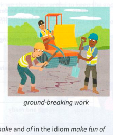

Bài tập
13.1 Sử dụng một thành ngữ trong mỗi câu để nhắc lại và tóm tắt những gì người kia nói.
-
A: Lydia rất thân thiện và tươi cười sau cuộc cãi vã của chúng tôi, nhưng theo cách rất giả tạo.B: Ừ, tôi biết. Một phút trước cô ấy còn giận dữ, phút sau cô ấy đã .
-
A: Tôi đã cố mua chiếc áo bóng đá mới của tuyển Anh, nhưng tất cả các cửa hàng đều đã bán hết.B: Ừ, rõ ràng chúng đang .
-
A: Nếu anh ấy tiếp tục cư xử như cách anh ấy đang cư xử, anh ấy sẽ gặp rắc rối lớn.B: Ừ, tôi nghĩ anh ấy chỉ đang . (Đưa ra hai đáp án.)
-
A: Trường Bridge Street College là trường tốt nhất trong toàn khu vực.B: Ừ, nó là .
-
A: Tôi thích làm Chủ tịch, nhưng tôi thấy khó khăn khi kế nhiệm một Chủ tịch nổi tiếng và thành công như Sarah.B: Ừ, cô ấy chắc chắn là .
13.2 Sửa các lỗi sai trong những thành ngữ sau.
- She really gets in my nerve sometimes.
- The last President was an in-and-out cruel monster, and the new one is not much better.
- I don't think you should cast aspirations on him. He's not here to defend himself.
- The scientists did some ground-making research on human genes.
- She had already upset me, but to add injuries to insults she told me I was ugly.

13.3 Trả lời các câu hỏi sau.
- Động từ và giới từ nào có thể được dùng thay cho make và of trong thành ngữ make fun of somebody?
- Động từ nào có thể được dùng thay cho get trong thành ngữ get on someone's nerves?
13.4 Hoàn thành mỗi thành ngữ sau.
- Họ đã chỉ trích cô ấy rất gay gắt, nhưng cô ấy as good as she và khiến họ phải im lặng.
- Chiếc bàn ăn này thật sự là cho căn phòng này. Gỗ phù hợp hoàn hảo với các cánh cửa.
- Tại sao bạn lại me such a time? Tôi biết tôi đã sai, nhưng tôi đã xin lỗi rồi. Tôi không thể làm gì hơn.
- Chúng tôi đã ở tại một khách sạn năm sao sang trọng. Nó thật sự out of .
Đến lượt bạn
Hãy nghĩ về những người hoặc những điều bạn ngưỡng mộ, hoặc những điều bạn có lý do để phê bình. Bạn có thể sử dụng những thành ngữ nào trong bài học này để nói về chúng?